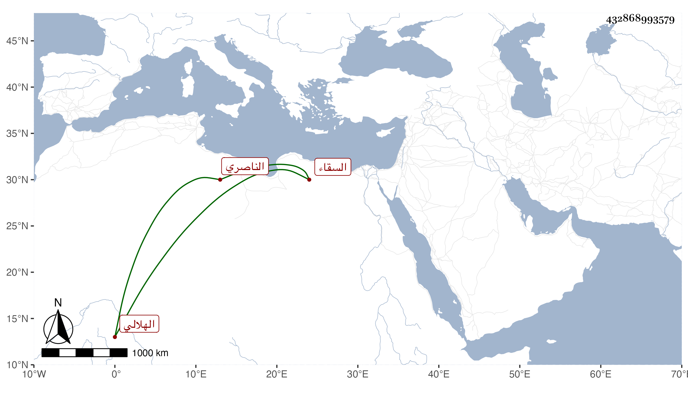

0902Sakhawi.DawLamic.ITO20230111-ara1.EIS1600.432868993579
Biography ID: 432868993579
957
علي بن محمد بن أحمد بن عبد الله بن حسن بن محمد بن عبد الله ابن الشيخ أبي عبد الله محمد بن جماعة بن عبد الله الهلالي الناصري السقاء وجده الأعلى قيل إنه كان يقال له العريان ممن أخذ عنه أبو القسم عبد العزيز المعربي المالكي المراغي ومات في رجب سنة إحدى وعشرين وسبعمائة . كان صاحب الترجمة يسقي الماء بالكوز كأبيه وللعامة فيهما اعتقاد فشاع بينهم أنه رؤى النبي صلى الله عليه وسلم وهو يقول لشخص سلم على علي السقا أو اطلب منه الدعاء أو نحو هذا ولم يلبث أن وقع فكسرت بعض أعضائه فتداوى ثم وقع ثانيا ثم ثالثا إلى أن امتنع من الحركة وصار لا ينهض لغير القعود وظهر على وجهه نور فتزايد اعتقاد الناس فيه وهرعوا لزيارته وطلب الدعاء منه واشتهر بالشيخ على السطيح وهو صابر شاكر عارف بهذه النعمة ويقال أنه كان قد قرأ القرآن أو أكثره وحفظ من مجالس الخير بعض الأحاديث وعرف بالخير . مات في يوم الأحد سابع رمضان سنة ست وسبعين وحمل نعشه من قريب سويقة عصفور إلى أن دخلوا به من باب الفرج من ظاهر المؤيدية حتى انتهوا به لجامع الأزهر فتقدم الزين زكريا للصلاة عليه ثم توجهوا به حتى دفن بتربة الأشرف قايتباي فكان أول من دفن بها ممن ينسب إلى الخير رحمه الله وإيانا .
